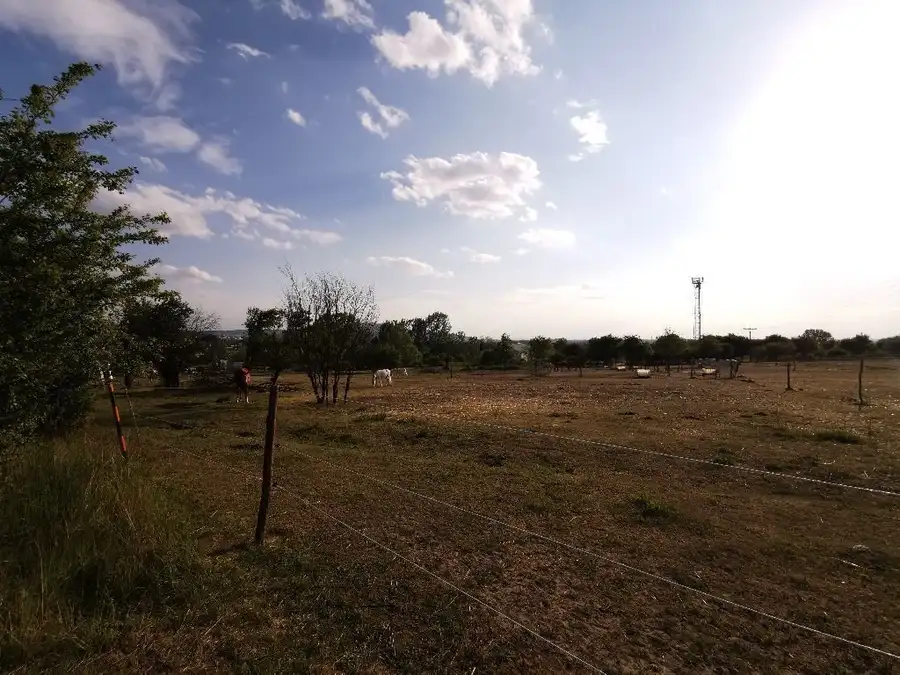
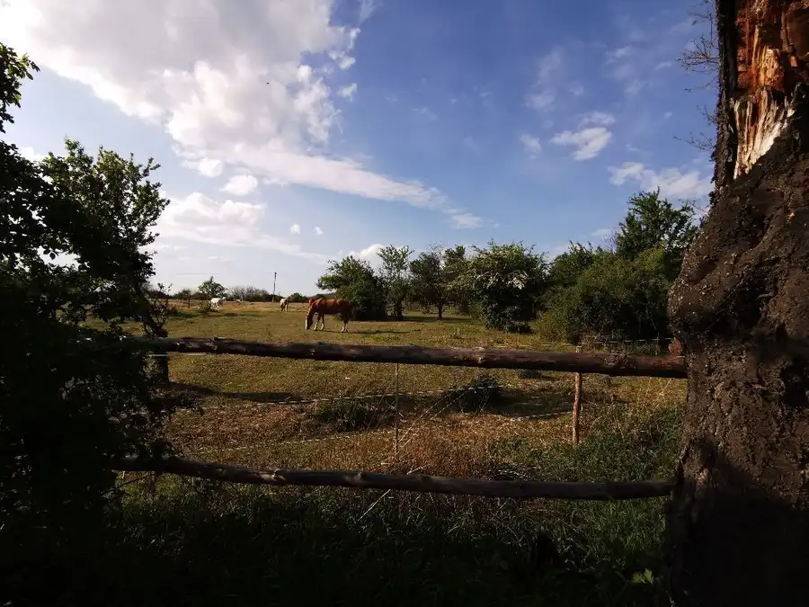
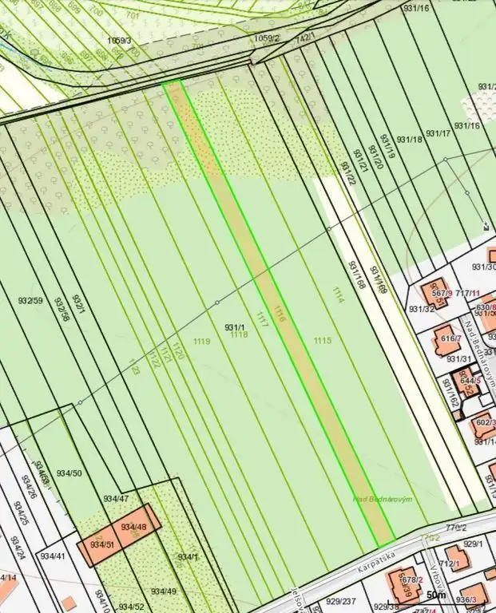
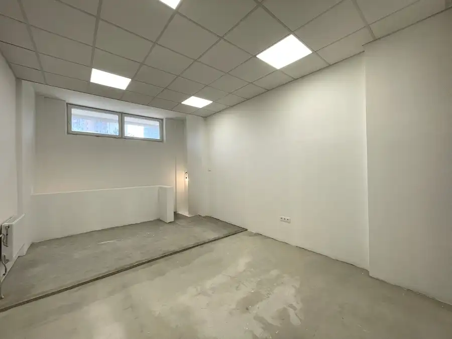
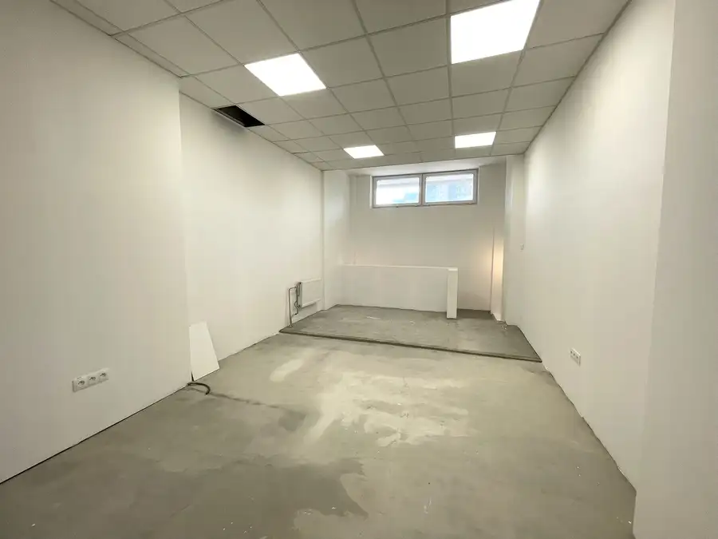

Ponúkame na predaj pozemok v obci Marianka, vstup na pozemok z hlavnej cesty, vhodný ako záhrada
Marianka



- Plocha2485 m²
- VlastníctvoOsobné
O nehnuteľnosti
Ponúkame na predaj pozemok, parcela registra ´´E´´ číslo 1116, s rozlohou 2485 m2 v obci Marianka, okres Malacky. Pozemok má šírku 10m. Nachádza sa podľa platného územného plánu v lokalite B2 a OP1. Časť pozemku od hlavnej cesty, ktorá je v lokalite B2 - územie určené na bývanie, sa nachádza v ochrannom pásme plynovodu. Pozemok vhodný ako investícia prípadne možnosť využiť ako záhradu.Prístup z hlavnej cesty. Všetky siete v dosahu pozemku.V prípade záujmu o obhliadku nás neváhajte kontaktovať.Cena: 49 900€PredávaINVEST REAL SLOVAKIA, s.r.o.Filip Hvězdamobil.: 0949 807 451mail: filip.hvezda@gmail.comIné RK - kontaktovať len s konkrétnym záujemcom o kúpu pozemku, sme vlastníkom nehnuteľnosti.
Parametre
- Druh
- Rekreačný pozemok
- Dátum zverejnenia
- 24. 02. 2020
- Elektrina
- Pri pozemku - 230 V
- Odpadové vody
- Nedostupné
- Plocha pozemku
- 2485 m²
- Plyn
- Pri pozemku
- Pripravenosť k výstavbe
- Schválené v územnom pláne
- Prístupová komunikácia
- Asfaltová
- Terén pozemku
- Rovinatý
- Typ
- Predaj
- Vlastníctvo
- Osobné
- Voda
- Pri pozemku - Verejný vodovod
- Územie
- Intravilán
- Šírka pozemku
- 10
Kde to je


Mohlo by Vás zaujímať

Komerčné priestoryNové 159 000 €Na predaj Multifunkčný priestor (89 m2) so samostatným vchodom, na podnikanie aj bývanie – Gessayova, Petržalka Petržalka, Bratislava 89 m²
BytNové 159 000 €Na predaj Multifunkčný priestor (89 m2) so samostatným vchodom, na podnikanie aj bývanie – Gessayova, Petržalka Petržalka, Bratislava 89 m²1. podlažie